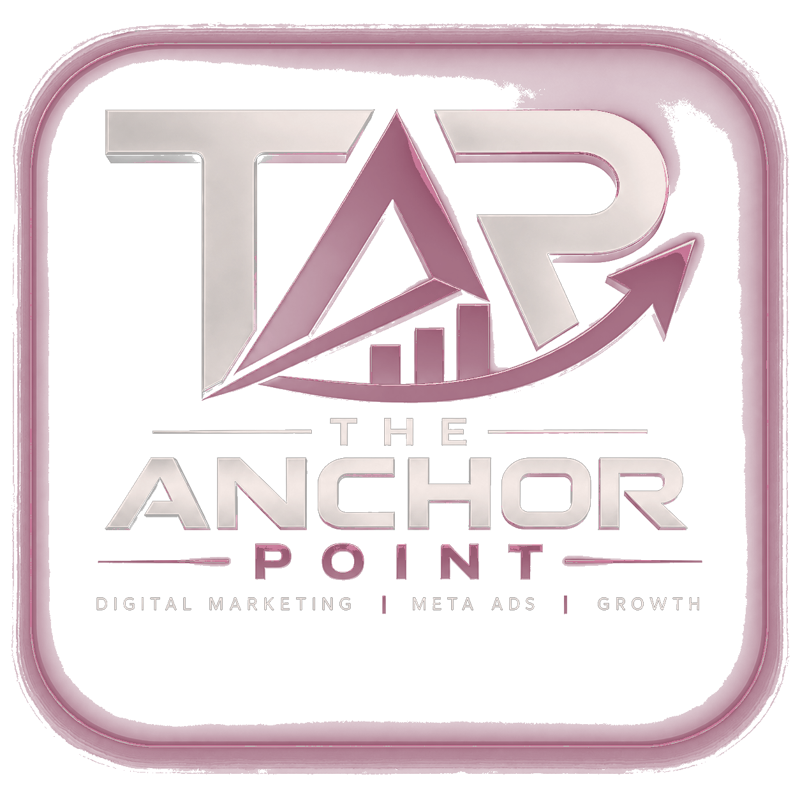

Strategy with a reason
Clear priorities based on business context, customer journey and the opportunity—not a cookie-cutter checklist.
Strategy, creative, performance and technology—connected into one focused system that helps brands attract the right people and turn interest into action.

From the first impression to the final conversion, we connect every digital touchpoint into one focused growth engine.
Meta Ads, Google Ads, funnels, creative testing and conversion optimisation.
Explore service ↗02Content systems, reels, community and campaigns built around your brand.
Explore service ↗03Technical SEO, content strategy and pages designed to attract intent.
Explore service ↗04Responsive websites and landing pages designed for attention and action.
Explore service ↗05Positioning, visual direction, campaign concepts and design systems.
Explore service ↗06Acquisition systems connecting ads, landing pages and follow-up.
Explore service ↗Growth is not one magic channel. It is the alignment of the offer, audience, creative, journey and follow-through.

Clear priorities based on business context, customer journey and the opportunity—not a cookie-cutter checklist.
Purposeful hooks, visuals and messaging built to connect with the audience and make the next step clear.
Ads, landing pages, content, tracking and follow-up work as parts of one experience.
Testing, review and iteration turn campaign signals into better decisions over time.
Meta campaigns need more than audience settings. We connect creative angles, offer clarity, testing structure and the conversion journey.


Reach people searching for your solution with campaigns built around keyword intent, relevant messaging and landing pages that make the next step clear.
Explore Google Ads ↗Build long-term search foundations with technical clarity, useful content, on-page structure and local relevance. No ranking guarantees—just a thoughtful process.
Explore SEO ↗
Fast, responsive and focused website experiences that communicate value, build trust and guide visitors toward a clear action.
Explore web development ↗Content themes, creative direction and a consistent publishing rhythm help your brand become familiar, useful and recognisable.
Explore social media ↗
Connect acquisition, landing pages, qualification and follow-up into a clear enquiry journey.
Build a lead system ↗A simple system. Clear priorities. Fast creative iteration. Every decision connected back to the business goal.
We study your offer, audience, competitors, existing data and customer journey to identify where growth may be unlocked.
We define positioning, channels, creative angles, campaign structure, landing experience and measurement.
Hooks, visuals, copy, landing pages and assets are built as one connected creative system.
Campaigns go live with structured testing, clean tracking and a feedback loop.
We analyse results, improve weak links and sharpen the system around business outcomes.
Channel choices and creative should fit the customer journey—not the other way around.
Explore creative directions across campaign systems, social content, branding and digital experiences. Concept visuals—not client case study claims.


Practical ideas for businesses that want better creative, stronger funnels and decisions based on signals—not guesses.
A click is only the beginning. Offer clarity, trust and landing-page friction all matter.
Read the insight ↗When response changes, a more deliberate creative testing loop can be smarter than a random budget change.
Read the insight ↗Attention, intent and follow-up should behave like one connected system.
Read the insight ↗We work with businesses in and around Delhi NCR, with remote collaboration available across India.
THEANCHORPOINT / Digital Growth Studio
Quick answers about working with THEANCHORPOINT for digital marketing, Meta Ads, SEO and lead generation.
We provide digital marketing services including Meta Ads, Google Ads, performance marketing, SEO, social media, lead generation, branding and conversion-focused websites.
Yes. Campaign structure, creative testing, audiences, landing journeys, retargeting and performance review can be planned around your business goal.
Yes. We are India-focused and can collaborate remotely with businesses across locations.
No fixed result or ranking is guaranteed. Performance depends on many factors including offer, budget, competition, website, audience and market conditions.
Call or WhatsApp +91 93117 03705 or email anshtyagi746@gmail.com.
Tell us what you want to build. We’ll talk through the goal and a sensible next step.